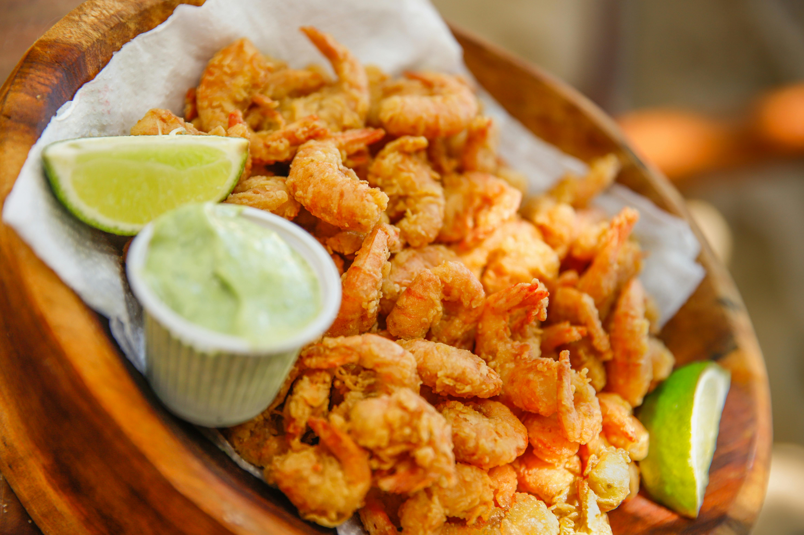

Fried Shrimp

Description
Restaurant-worthy fried shrimp is 15 minutes (and a few simple ingredients) away.
This irresistibly crunchy fried shrimp recipe is impossible to beat.
Ingredients
- ⅓ cup all-purpose flour
- ¾ teaspoon salt
- ½ teaspoon ground black pepper
- 3 large eggs
- 1 ½ cups Kikkoman Panko Bread Crumbs
- 1 pound uncooked jumbo shrimp, peeled and deveined, tails left intact
- 1 cup vegetable oil for frying, or as needed
Steps
- Gather all ingredients.
- Mix flour, salt, and pepper in a medium bowl. Beat eggs in a second medium bowl until frothy. Place bread crumbs in a third bowl.
- Dredge shrimp in the flour mixture, then shake off excess.
- Dip shrimp into beaten eggs.
- Then press shrimp into bread crumbs, turning to coat both sides.
- Heat 2 inches oil in a large, heavy pot to 350 degrees F (175 degrees C). Deep-fry shrimp in batches in the hot oil until cooked through, about 1 minute. Use tongs to transfer shrimp to a paper towel-lined plate to drain. Repeat to cook remaining shrimp.
Return to Homepage